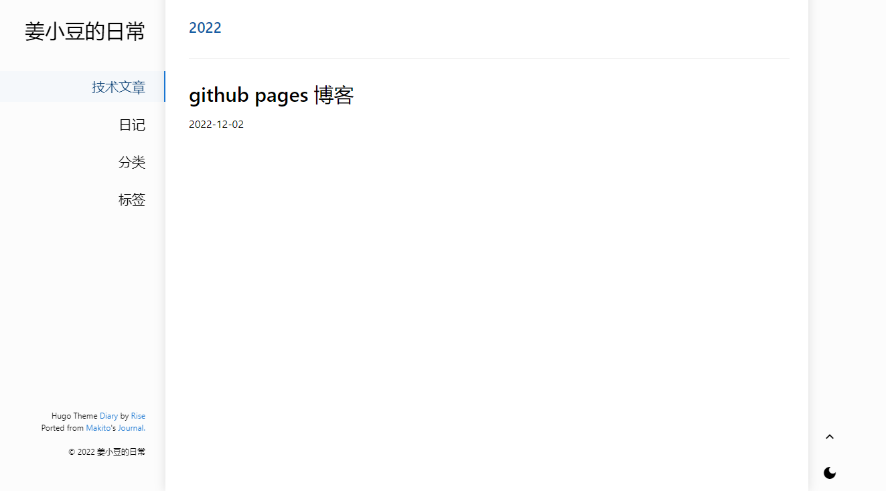
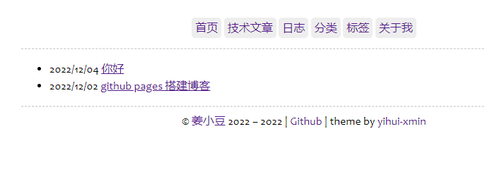

想要找个地方写博客， 最后决定使用github pages搭建。和阮大佬搭建一个免费的，无限流量的Blog说的一样，经历几个阶段，最后还是想找一个自由不受平台限制的，又不太麻烦的博客平台。
选了一个博客主题，是基于hugo的。
步骤
-
安装 Go
-
安装hugo
go install -tags extended github.com/gohugoio/hugo@latest报错：go: github.com/gohugoio/hugo@latest: module github.com/gohugoio/hugo: Get “https://proxy.golang.org/github.com/gohugoio/hugo/@v/list": dial tcp 142.251.42.241:443: connectex: A connection attempt failed because the connected party did not properly respond after a period of time, or established connection failed because connected host has failed to respond.
需要设置模块代理
go env -w GOPROXY=https://goproxy.cn。再次安装hugo，报错
cgo: C compiler "gcc" not found: exec: "gcc": executable file not found in %PATH%。需要GCC，在go huge源码安装页面也有说明。可以安装mingw，把bin放到环境变量Path中。
输入
hugo version报错。放弃这个方法。直接下载安装包（intel下载amd即可）。 -
github上新建一个 username.github.io 的仓库。（username是自己在github的用户名）。拉取仓库
-
创建站点
进入仓库的目录，输入
hugo new site xxx，新建站点 -
进入xxx/themes, 克隆一个主题。（也可以用子模块引用的方式，不过我受过伤就不用了）
我用了这个主题
git clone git@github.com:AmazingRise/hugo-theme-diary.git diary -
配置，打开xxx/config.toml 增加主题
theme = 'diary' -
本地运行预览，xxx 目录下，
hugo server -D。访问 http://localhost:1313/。 -
生成使用
hugo -D命令。会将静态网站生成到 public 目录下。-D参数是为了包含草稿文章。 -
新增文章
hugo new post/test.md在content/post/目录下新增了一个test.md文档。如果自己移动一个md文件进去是不会在网站显示的，因为没有格式说明，如下是yaml的格式：
|
|
注：如果新建页面，里面文章列表为空的话，页面会显示404。有草稿文章但是发布时没有用-D参数也不算。
最佳实践：
-
将带hugo主题的代码（hugo生成项目和主题拉取代码）放到一个私密库中。
-
将生成好的public 代码放到 username.github.io 库中。或者使用子模块（3-4步）
-
然后，使用submodule 将后者放到前者的子模块中。
git submodule add git@github.com:onionc/onionc.github.io.git ./public（如果有public先删除）
（重新拉取hugo羡慕时，clone后需要
git submodule update --init --recursive来更新子模块） -
在hugo项目下新建一个用来发布博客的脚本
|
|
- 上面的3、4步是子模块的方式（用了一段时间感觉不太好用）。如果是两个库分开放，脚本如下：
|
|
发布文章的流程
- 将md从某处复制到
content下的某个子目录（也可以是content）。（需要增加格式头。名称和日期必须） - 图片放到子目录的
images/文件夹，将md中的图片地址改为../images。 - 点击发布脚本提交博客。
- 提交hugo项目。
预览：

p.s. 发现一个简洁的主题，很喜欢。谢益辉大佬的xmin。感谢！

p.p.s. 因为设置了链接格式permalinks，包含有日期，所以之后就算更新了文章也不要轻易更新日期。